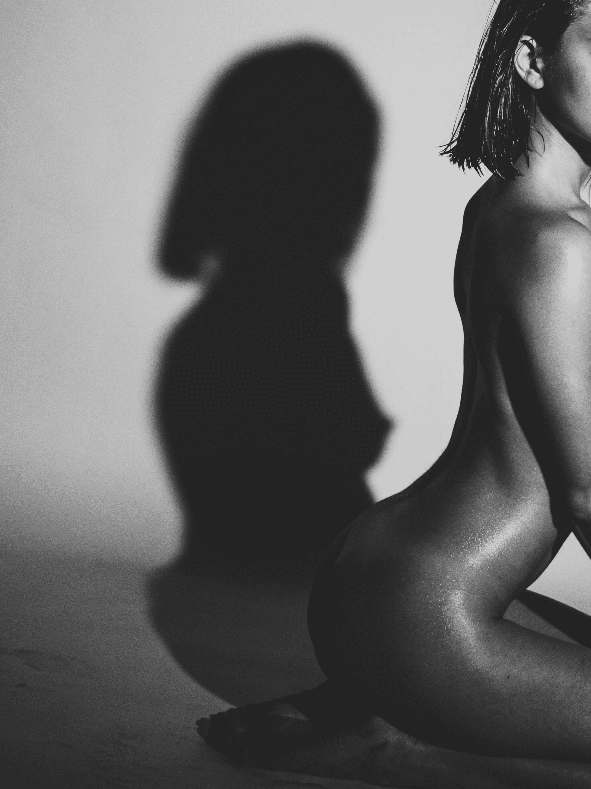

<div class="woman">
  <div class="container">
    <div class="woman-wrapper">
      <div>
        <diiv class="woman-img">
          <picture>
            <source
              media="(min-width: 706px)"
              sizes="50vw"
              srcset="../img/womansit.png"
              type=""
            />
            <source
              sizes="(min-width: 706px)"
              srcset="../img/womansit2.png"
              type=""
            />
            
          </picture>
        </diiv>
        <div class="arrow-block woman-arrow__block">
          <p class="arrow-text">Подробнее</p>
          
        </div>
      </div>
      <div class="woman-text">
        <diiv class="woman-title">
          <h2>Женская фотосессия <span>PURE</span></h2>
        </diiv>
        <diiv class="woman-subtitle">
          <p>
            Красивый силуэт, игра света и тени, легкие ткани - все это в нежной
            портретной фотосессии в темной студии.
          </p>
        </diiv>
        <div class="button-block woman-button">
          <button class="button woman-arrow__background">
            <p>Заказать съемку</p>
          </button>
        </div>
      </div>
    </div>
  </div>
</div>
